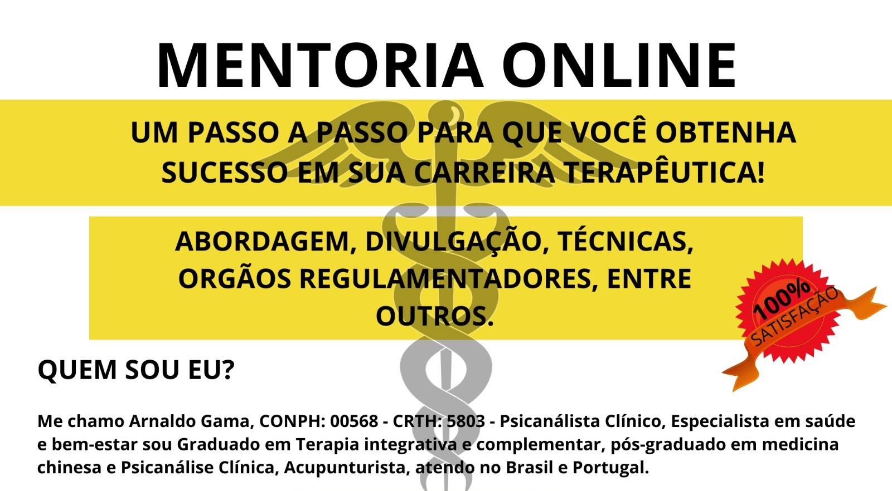
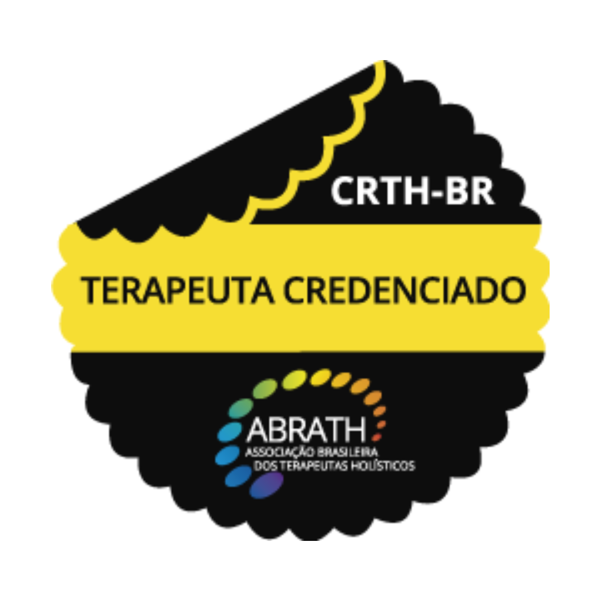
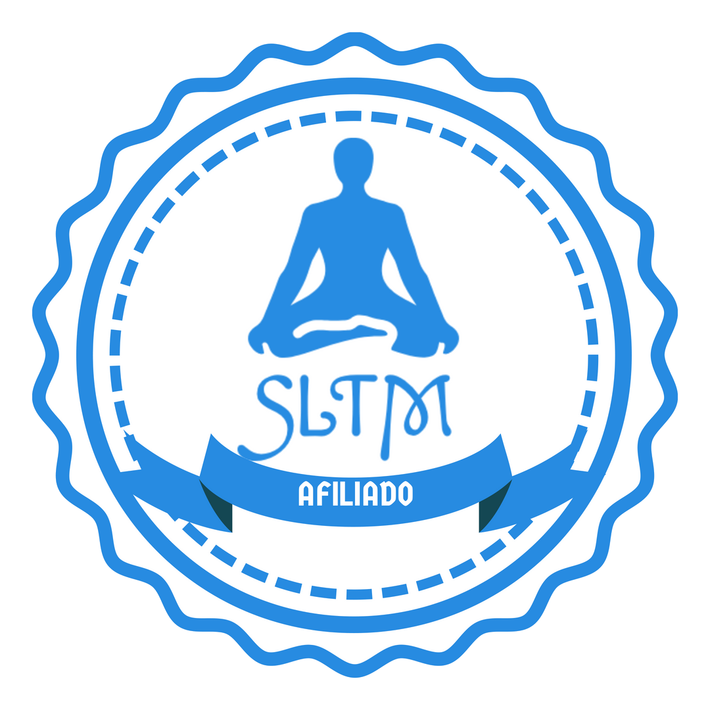
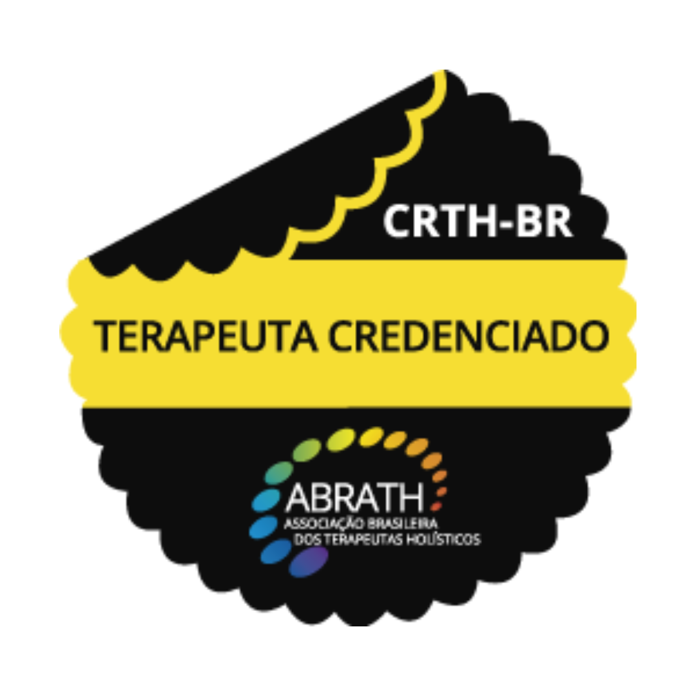
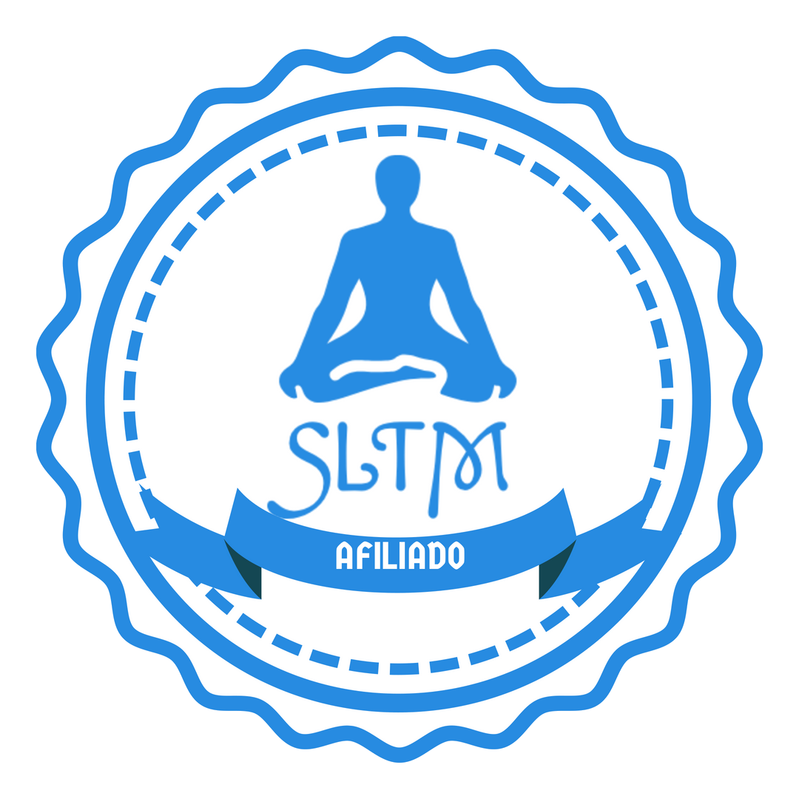

MENTORIA
INDIVIDUAL
Aprendeu nos cursos técnicos, livres ou faculdade a forma tradicional de avaliar ou
obter paciente, mas, acha que isso não é o suficiente e quer ampliar sua
abordagem?
Já faz atendimentos, mas acha que isso não é suficiente e quer ampliar sua
abordagem?
Já faz atendimentos, mas tem duvidas em lidar com algumas situações?
A Mentoria pode te ajudar!!!
Mentoria é o processo de desenvolvimento de carreira feita junto a um profissional
com mais experiência que compartilha sua vivência e facilita o caminho para você.
Na mentoria você vai poder tirar todas as suas dúvidas, discutir os casos e obter
ferramentas e materiais para seus atendimentos.
Para quem é a Mentoria?
A Mentoria atende aos alunos de terapias integrativas e complementares ou
formandos e formados em psicanálise que gostariam de mudar a abordagem de
suas atendimentos além de terapeutas holísticos com ddificuldade de obter mais
clientes.
A sessão tem duração de 1 hora online, individual.
Quer saber mais? Entre em contato pelo whatsapp +55 19 98320-4514

 


